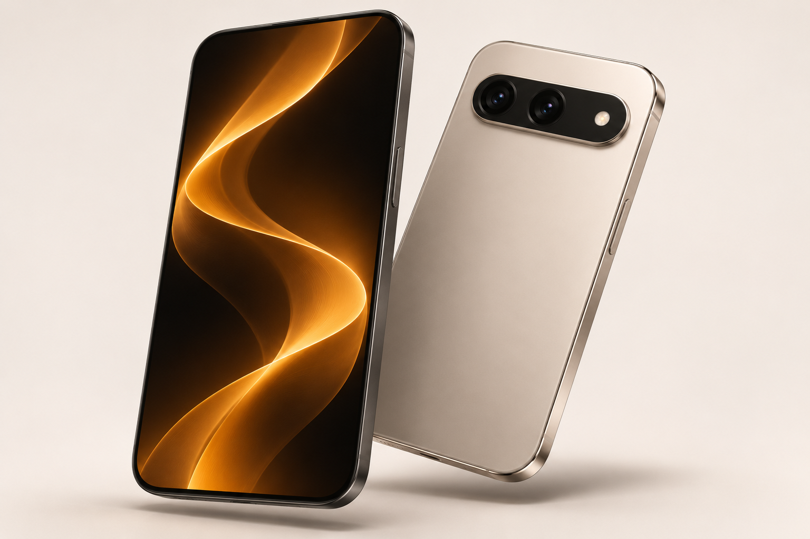
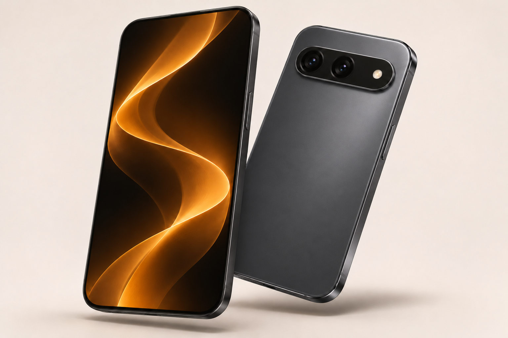

形，由光定义。向下探索
01 / 设计语言
少一点边界。
多一些想象。
让金属收住轮廓，让玻璃留住光。
在曲面与平面之间，寻找恰好的分寸。
金属 · 玻璃 · 光概念渲染 / 局部
02 / 流光之间
光，随你而动。
指尖轻移，让一道光有了新的方向。
移动指针或轻触画面，探索光的轨迹。

03 / 色彩的温度
你的色彩。
你的光。
沉静，或温润。
让心境，成为设计的一部分。
暖金 · 温润的光
选择颜色，查看对应的机身外观。